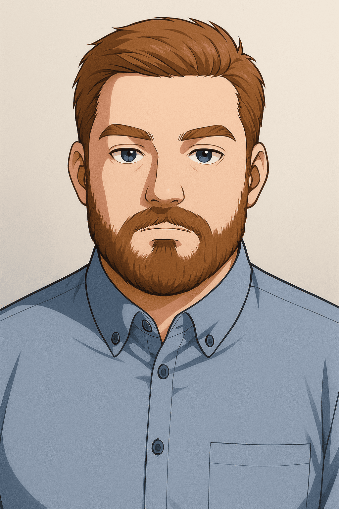

Yves Simon
Conseiller Emploi & Évolution Professionnelle
Passionné par l'accompagnement humain, je guide les personnes vers un épanouissement professionnel durable en mobilisant écoute, expertise et outils adaptés.
7+
Ans d'expérience terrain
3
Formations diplômantes
100%
Engagé & disponible

🎯 CEP RNCP Niv. 5
Ma philosophie
Ce qui guide mon accompagnement
👂
Écoute active
Comprendre profondément chaque situation avant d'agir, sans jugement.
🎯
Personnalisation
Adapter chaque parcours aux besoins réels et au niveau d'autonomie.
🌱
Développement durable
Viser un épanouissement professionnel sur le long terme.
🤝
Bienveillance
Maintenir une posture de neutralité et de soutien tout au long du parcours.
Compétences clés
Mon expertise au service des actifs
Une combinaison unique d'expérience terrain, de formation technique et de posture relationnelle pour un accompagnement complet.
📊
Expertise Marché & Veille
Analyse du marché de l'emploi, identification des tendances sectorielles et des opportunités.
AnalyseVeilleMarché
🧭
Accompagnement CEP
Construction et suivi de plans d'action individualisés avec indicateurs de progression.
CEPBilanAccompagnement
🖥️
Pilotage & Outils Digitaux
Animation d'ateliers thématiques et maîtrise des outils de recherche d'emploi numériques.
DigitalAteliersInnovation
🔍
Diagnostic de situation
Évaluation des freins périphériques et des leviers pour chaque personne accompagnée.
DiagnosticAnalyseSolutions
Témoignages
Ce que disent ceux qui m'ont côtoyé
"
★★★★★
Yves possède une capacité rare à mettre les gens en confiance. Son approche structurée et bienveillante m'a permis de retrouver un emploi en moins de 3 mois.
Sophie M.
Ancienne bénéficiaire – Reconversion réussie
"
★★★★★
En stage avec lui lors de mon PMSMP, j'ai pu observer une vraie rigueur professionnelle et une pédagogie adaptée à chaque profil. Un futur excellent conseiller.
Marc D.
Formateur – ID Formation Armentières
"
★★★★★
Sa polyvalence est un vrai atout : le terrain, la technique et le relationnel sont parfaitement équilibrés. Yves sait expliquer des notions complexes de façon très accessible.
Isabelle R.
Responsable RH – Partenaire formation
Prêt à collaborer ?
Vous cherchez un conseiller emploi motivé, en cours de certification RNCP Niv. 5 ? Contactez-moi pour échanger sur votre projet.
Mon histoire
Formations & Expériences
Un parcours atypique et enrichissant, du terrain à l'accompagnement humain.
Diplômes & Certifications
Formations
🎓
2025 – 2026
Conseiller emploi et évolution professionnelle
Certificat RNCP Niv. 5 – OpenClassrooms
Formation en cours. Acquisition des compétences en accompagnement CEP, techniques de recherche d'emploi et dispositifs de formation professionnelle.
CEPRNCP 5Formation professionnelleE-learning
🌿
2019 – 2020
CAPa Agricole Jardinier Paysagiste
CFPPA des Flandres – Lomme
Formation professionnelle en aménagement paysager, gestion des espaces verts et techniques horticoles. Développement du sens de l'organisation et du travail en équipe.
PaysagismeGestion projetTravail terrain
⚡
2011
BAC Professionnel Électrotechnique
Lycée Jacquard – Caudry
Formation technique en électrotechnique. Développement de la rigueur, de la méthode et de la capacité à résoudre des problèmes complexes.
TechniqueRigueurMéthode
Expériences professionnelles
Parcours professionnel
🧑🏫
Février 2025 – Présent
Stagiaire PMSMP – Formateur adultes
ID Formation – Armentières
Mise en situation professionnelle en milieu réel. Animation de séquences de formation pour adultes, accompagnement individualisé, co-construction de parcours pédagogiques.
Formation adultesAnimationPédagogiePMSMP
🌳
2021 – 2023
Paysagiste – CDDI & Suppléant d'équipe
Orme Activités – Hazebrouck
Direction d'équipe (Mars 2022 – Fév. 2023), gestion d'espaces verts, coordination de chantiers. Expériences précédentes : Stage Jardinier Paysagiste à Lambersart (Oct. 2021), Agent espaces verts (Mars 2021 – Mars 2022).
ManagementCoordinationTerrainCDDI
🌱
2019 – 2020
Jardinier Paysagiste Stagiaire
Stage EPSM Lille Métropole – Armentières
Stage pratique en milieu hospitalier. Entretien et aménagement des espaces verts, travail en équipe pluridisciplinaire, respect des protocoles spécifiques.
StageMilieu hospitalierAménagement
🥕
2016 – 2018
Maraîcher Bio Stagiaire & Ouvrier Agricole
Le champs des reinettes (Ennevelin, 2018) – Ferme du Pont d'Achelles (Nieppe, 2016)
Expériences agricoles variées : maraîchage biologique et travaux agricoles saisonniers. Développement de la résistance physique, du sens du terrain et de l'adaptabilité.
AgricultureBioAdaptabilité
Savoir-être
Soft Skills
👂Écoute active & Empathie
⚖️Neutralité & Bienveillance
💬Aisance relationnelle
🧩Analyse & Synthèse
📋Rigueur & Organisation
🔍Curiosité intellectuelle
🔄Capacité d'adaptation
🧘Intelligence émotionnelle
Réalisations
Projets & Galerie
Des initiatives concrètes au service de l'insertion et de l'évolution professionnelle.
Mes projets
Initiatives & Ateliers
Atelier collectif
CV & LinkedIn optimisés
Animation d'un atelier collectif d'optimisation des CVs et profils LinkedIn pour renforcer la visibilité des candidats sur le marché.
Accompagnement individuel
Parcours de reconversion
Suivi individuel d'un bénéficiaire en reconversion : diagnostic, plan d'action, identification des formations, suivi bi-mensuel sur 6 mois.
Outil digital
Cartographie des ressources emploi
Création d'un guide numérique interactif recensant les plateformes, outils et ressources pour optimiser la recherche d'emploi dans la région.
Atelier simulation
Préparer son entretien
Ateliers de simulation d'entretiens de recrutement avec mises en situation, feedbacks constructifs et techniques de communication non-verbale.
Diagnostic professionnel
Bilan & Plan d'action
Élaboration de diagnostics de situation complets et définition de plans d'action individualisés avec indicateurs de progression mesurables.
Veille stratégique
Tableau de veille emploi
Mise en place d'un système de veille régulière sur les tendances du marché de l'emploi régional pour mieux orienter les bénéficiaires.
Galerie
Moments professionnels
🔍
🔍
🔍
🔍
🔍
🔍
Parlons-nous
Prendre contact
Une opportunité, un projet, une question ? Je suis à votre écoute.